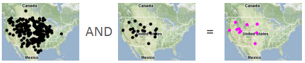
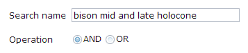

Sometimes it is useful to combine searches for interpretation or presentation purposes. For example, you may want to find locations where two taxa co-occur, or where a taxon occurs in all of many time periods. Neotoma Explorer enables you to combine as many searches as you wish to create new map layers of interest.

- Click the
 button to open the Current Searches list.
button to open the Current Searches list.
- Check the boxes next to the searches you wish to combine, then click the Combine button.
- Type a name for your search.

- Select the combination logic:
- AND to intersect search results
- OR to union them
- Click OK to complete the combine or Back to cancel.
- If the combine operation yields at least one result record, the new search will be added to your list; otherwise, you will receive a notification in the Messages slider that no results were produced.
Created with the Personal Edition of HelpNDoc: Full-featured Kindle eBooks generator